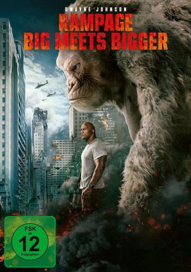

gesehen am 06.09.2018
gesehen am 06.09.2018Alternativ: Rampage gesehen am 06.09.2018
 
 IMDB-Wertung: 6.2 / 10
IMDB-Wertung: 6.2 / 10  Metascore:
Metascore: 
Davis Okoye ist Primatenforscher, welcher es nicht leicht hat mit andren Menschen. Er hat enge Freundschaft mit George - einem sehr intelligenten Silberrücken. Nach dem ein Genexperiment aus dem Runder läuft wird aus dem sanftmütigen Silberrücken ein Monster mit gewaltigen Maßen. Es stellt sich schnell heraus das George nicht das einzige mutierte Tier ist. Um seine Freund Georg zuretten tut sich Okoye mit einer in Ungnade gefallenen Gentechnikerin zusammen - um ein Gegenmittel zu entwickeln.
Jahr: 2018
Dauer: 107 Minuten
FSK: 12
Land: USA Studio: Warner Bros.Tonspuren: DTS - ,
Untertitel: Deutsch, Englisch,
Auflösung: 1080p (1920x800) Größe: 10342 MB
Genre: Action, Sci-Fi, Abenteuer
Regisseur: Brad Peyton
Drehbuch: Ryan Engle
Soundtrack: Andrew Lockington
Darsteller:
 Dwayne Johnson als Davis Okoye
Dwayne Johnson als Davis Okoye Naomie Harris als Dr. Kate Caldwell
Naomie Harris als Dr. Kate Caldwell Malin Akerman als Claire Wyden
Malin Akerman als Claire Wyden Jeffrey Dean Morgan als Harvey Russell
Jeffrey Dean Morgan als Harvey Russell Jake Lacy als Brett Wyden
Jake Lacy als Brett Wyden Joe Manganiello als Burke
Joe Manganiello als Burke Marley Shelton als Dr. Kerry Atkins
Marley Shelton als Dr. Kerry Atkins P.J. Byrne als Nelson
P.J. Byrne als Nelson Demetrius Grosse als Colonel Blake
Demetrius Grosse als Colonel Blake Jack Quaid als Connor
Jack Quaid als Connor Matt Gerald als Zammit
Matt Gerald als Zammit Will Yun Lee als Agent Park
Will Yun Lee als Agent Park Stephen Dunlevy als First MP
Stephen Dunlevy als First MP Danny Le Boyer als Second MP
Danny Le Boyer als Second MP Gary Weeks als Police Captain
Gary Weeks als Police Captain Arnold Chun als Commanding Officer
Arnold Chun als Commanding Officer Pete Burris als Rancher (uncredited)
Pete Burris als Rancher (uncredited) Timothy Carr als Mercenary (uncredited)
Timothy Carr als Mercenary (uncredited) Laura Distin als FBI Agent (uncredited)
Laura Distin als FBI Agent (uncredited) David Dunston als Agent (uncredited)
David Dunston als Agent (uncredited)Datei: X:\2018(N-Z)\Rampage - Big meets Bigger (2018, FSK12, 1920x800).mkv seit 20.07.2018
Festplatte: HD 2018(G-Z)-2019(A-Z)
 Es gibt insgesamt 172 Filme in der Gruppe '2018(N-Z)'
Es gibt insgesamt 172 Filme in der Gruppe '2018(N-Z)'